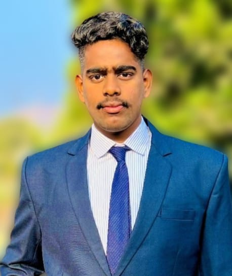

<!DOCTYPE html>
<html lang="en">
<head>
  <meta charset="UTF-8">
  <meta name="viewport" content="width=device-width, initial-scale=1.0">
  
  <title>Resume</title>
  <style>
    /* Internal CSS rules here */
    body {
      font-family: Arial, sans-serif;
    }
    h1 {
      text-align: center;
      border-bottom: 2px solid;
    }
    .section {
      margin-bottom: 20px;
      text-align: center;
    }
    #para1{color:rgb(38, 0, 255);}
    h2{
      color: blue;
    }
    body{
  background-color: linen;
}


h1 {
  color: maroon;
  margin-left: 40px;
} 
    /* ... (Rest of your CSS rules) ... */
  </style>
</head>
<body>
  <!-- ... (Rest of your HTML content) ... -->
</body>
</html>


<h1 style="color: blueviolet;text-align: center;">Resume</h1>
  
<p id="para1">Personal Information</p>


    
    <p><i>Name: <b>Omkar Dnyaneshwar Surve</b></p><i></p>
    <p>Email: omkarsurve917@gmail.com</p>
    <p>Phone: 9175235998</p>


    <h2>Education</h2><hr>
    <table border="1px">
      <tr>
      <th>Course</th>
      <th>Institution</th>
      <th>Grade</th>
      </tr>
    <tr>
      <TD>2nd Year Engineering</TD>
    <TD>VIT,PUNE</TD>
  <TD> BRANCH IT


  </TD></tr>
    </table>
    
  </div>
  <h2>Education</h2>
  <table border="2px">
    <tr>
      <th>Course</th>
      <th>Institution</th>
      <th>Grade</th>
    </tr>
    <tr>
      <td>2nd Year Engineering</td>
      <td>VIT, Pune</td>
      <td>Branch: IT</td>
    </tr>
    <tr>
      <td>HSC</td>
      <td>oxford collage arvi</td>
      <td>82%</td>
    </tr>
    <tr>
      <td>SSC</td>
      <td>shivbhumi vidyalay khed shivapur</td>
      <td>81%</td>
    </tr>
  </table>
  
  <h2>Summary</h2>
  <div class="summary">
    <p>I am a technical enthusiast with a passion for web development, machine learning, and AI. I have a strong interest in exploring new technologies and applying them to real-world projects. With a solid foundation in programming and a focus on continuous learning, I aim to contribute to innovative and impactful projects in the field of technology.</p>
  </div>
  
  <h2>Skills</h2>
  <ul>
    <li>C programming</li>
    <li>Android Development</li>
    <li>Web Development</li>
 
    <li>Java programming</li>
     <li>Database Management</li>
    <li>HTML/CSS</li>

    
  
  </ul>
</body>
</html>
  
